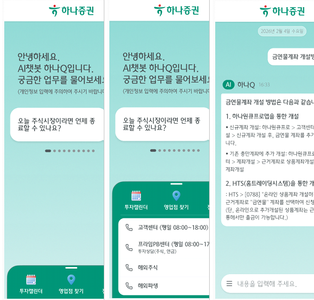
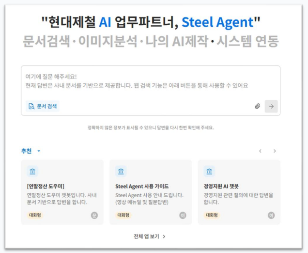
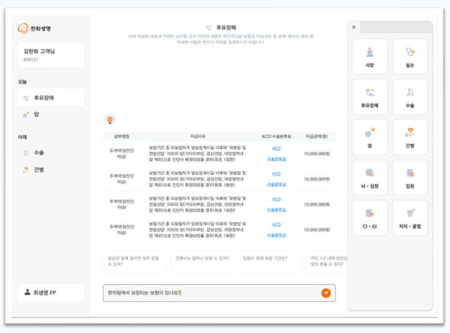
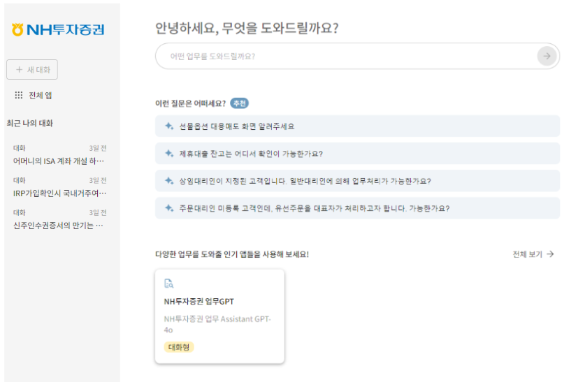
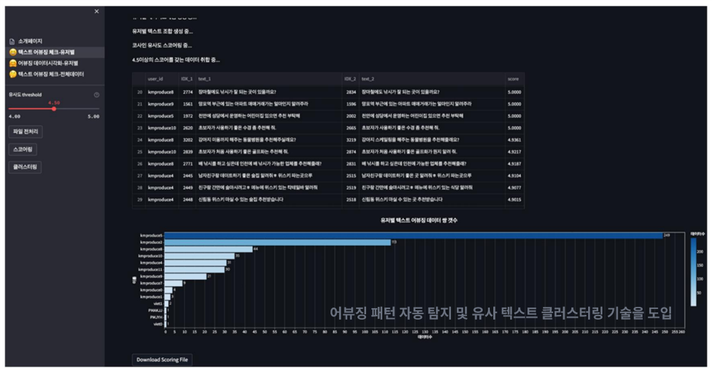

다양한 이해관계자들과의 협업 속에서 요구사항을 조율하고, 핵심 원인을 찾아내어 전략적으로 접근합니다.
각자의 전문성이 효과적으로 작동하도록 협업의 장을 설계하는 Orchestrator이자 Problem Solver입니다.
문제의 핵심 원인 파악 및 전략적 접근 방식 제시
Tech-Biz-Customer 간의 언어 번역 및 조율
빠르고 정확한 실행력 기반의 가시적 성과 창출
MTS 내 AI 챗봇 탑재로 대고객 응대를 효율화하고, 혁신금융서비스 지정에 결정적으로 기여했습니다.

온프레미스 사업의 표준 모델을 확립하여, 영업팀이 즉시 활용 가능한 공통 기능(Feature)을 도출하고 제품화에 기여. 고객사의 커스텀 요구사항을 제품의 공통 기능으로 범용화 개발하여 효율성을 극대화했습니다.

안정적인 하이브리드 클라우드 환경을 구축, 대규모 상품 상담 트래픽을 처리할 기반을 마련. 약 4만 명의 FP상품상담사가 사용할 플랫폼을 개발, 대고객 상담 업무를 효율화하였습니다.

답변 정확도 90% 이상 및 사용자 만족도 90%를 달성하며, 성공적인 사내 영업점 AI 도입
사례로 평가받았습니다.

기존 1:1 방식이 아닌, 2명의 화자가 3개의 페르소나를 연기하는 다중 화자 시뮬레이션을 도입하여 대화 다양성 확보 및 유휴 시간 최소화.
어뷰징 패턴 자동 탐지 및 유사 텍스트 클러스터링 기술을 도입하여 검수 과정을 반자동화(Semi-automation)하고 데이터 정합성 확보.

※ 4개사 브랜드 이미지를 통합할 페르소나 설계 및 감정 연기 디렉팅 수행
Key Achievements평서문 위주의 기존 TTS를 넘어, 상담 상황별 감정(공감·사과·전문성)을 담은 고품질 오디오 납품
1차 결과물의 우수성을 인정받아 추가 데이터 구축 계약 체결
전문 성우 섭외부터 스튜디오 녹음 디렉팅까지 E2E 품질 관리 프로세스 정립
고객사의 센터장님께서도 결과물을 직접 청취하시고 매우 만족해하셨습니다. 덕분에 성공적으로 모델 학습을 마칠 수 있었습니다.
사회적 통념과 도덕적 판단이 요구되는 고난이도 상황 판단 데이터 수집 프로젝트
주요 수행 내용사용자와 교감할 수 있는 멀티모달(음성+텍스트) 인터랙션 데이터베이스 구축
주요 수행 내용암묵지로 존재하던 온프레미스 설치 및 운영 노하우를 체계적으로 문서화.
체계적인 가이드와 멘토링 시스템을 통해 신규 입사자 및 인턴의 적응 기간 단축.
기술적 제약사항과 비즈니스 요구사항 사이의 간극을 좁히는 '언어 번역가' 역할 수행.